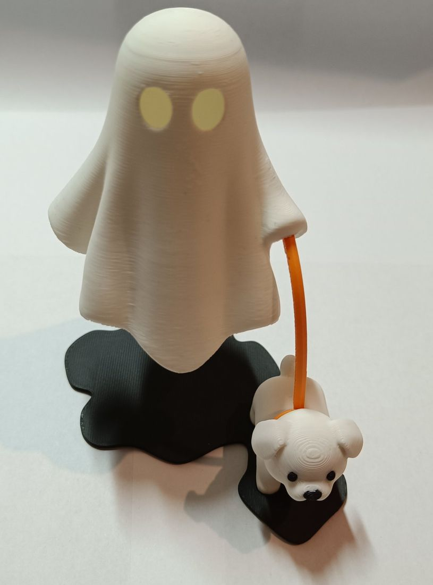
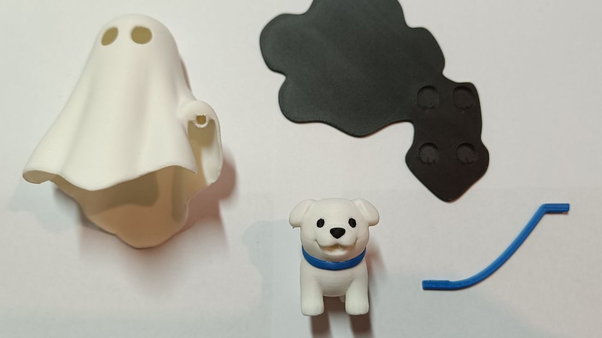
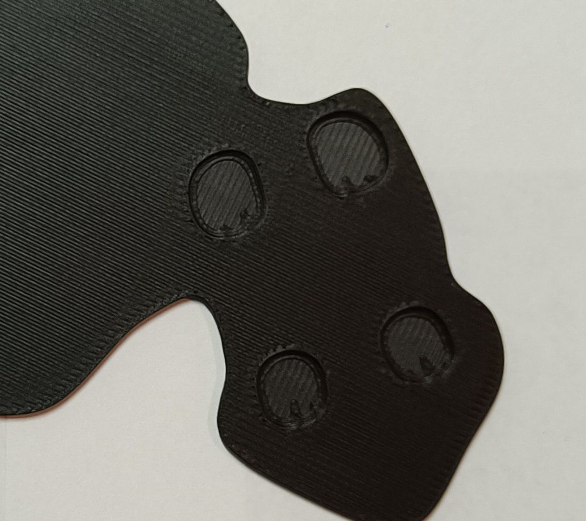
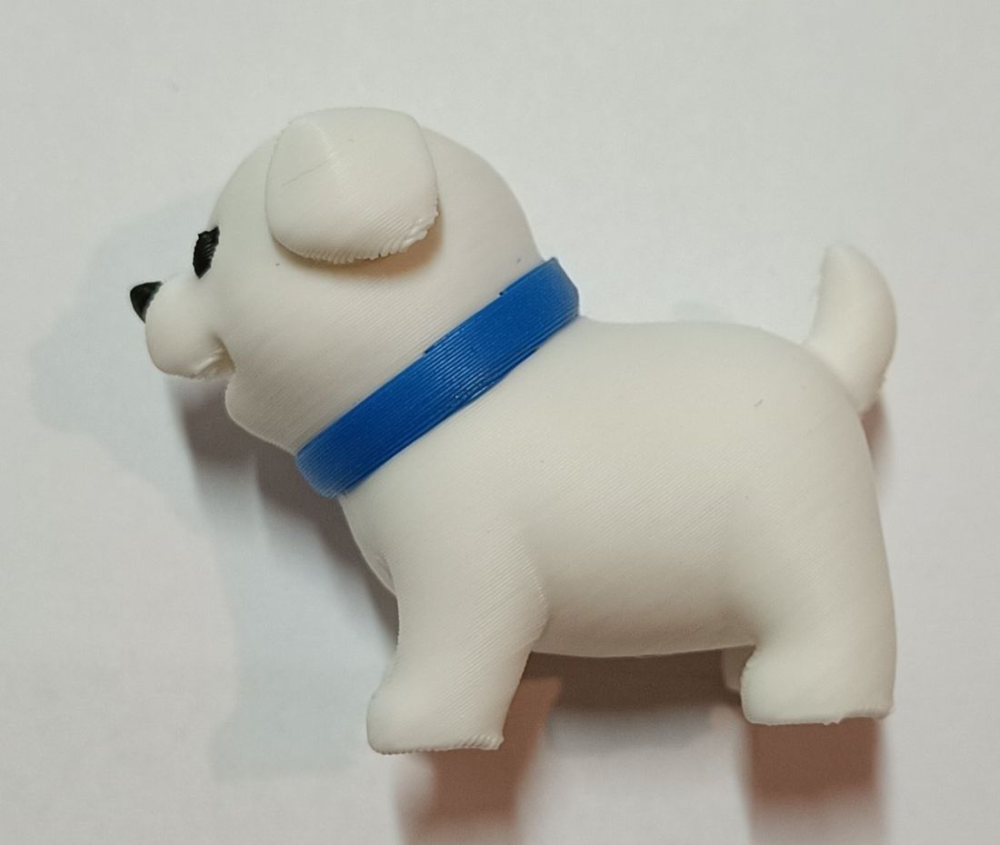
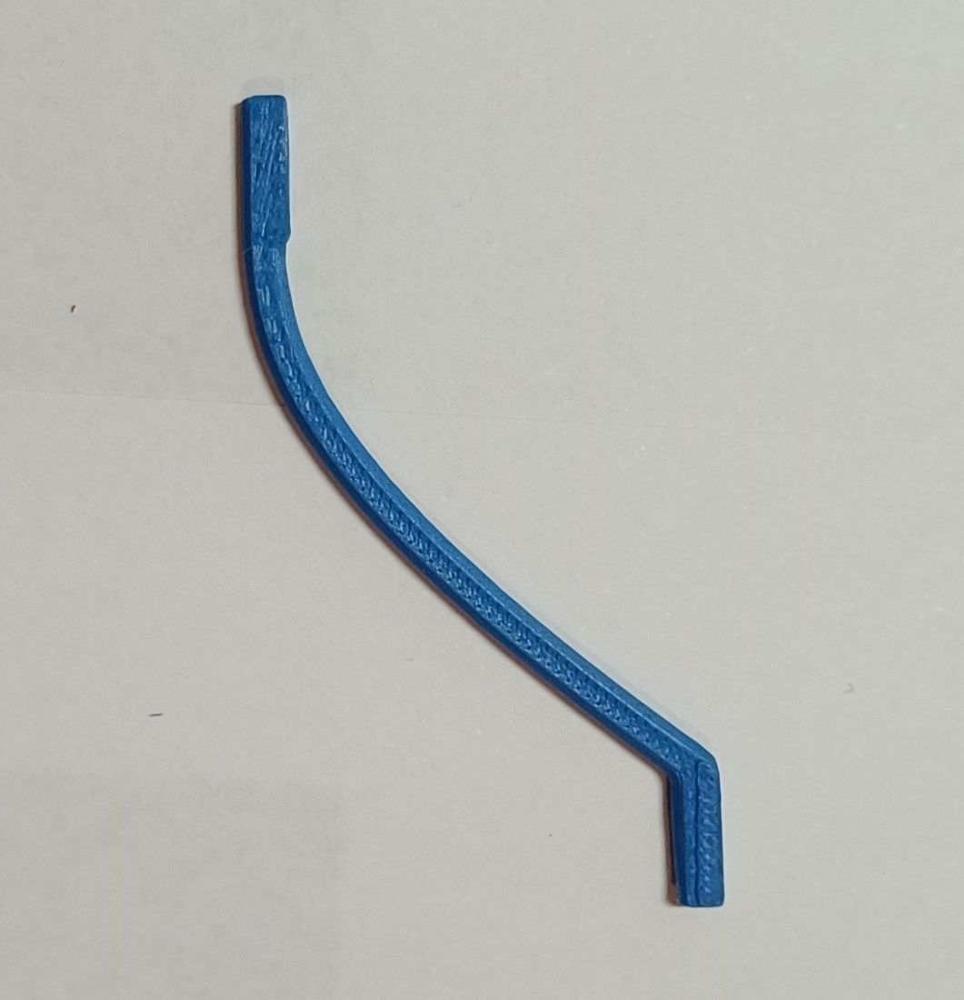
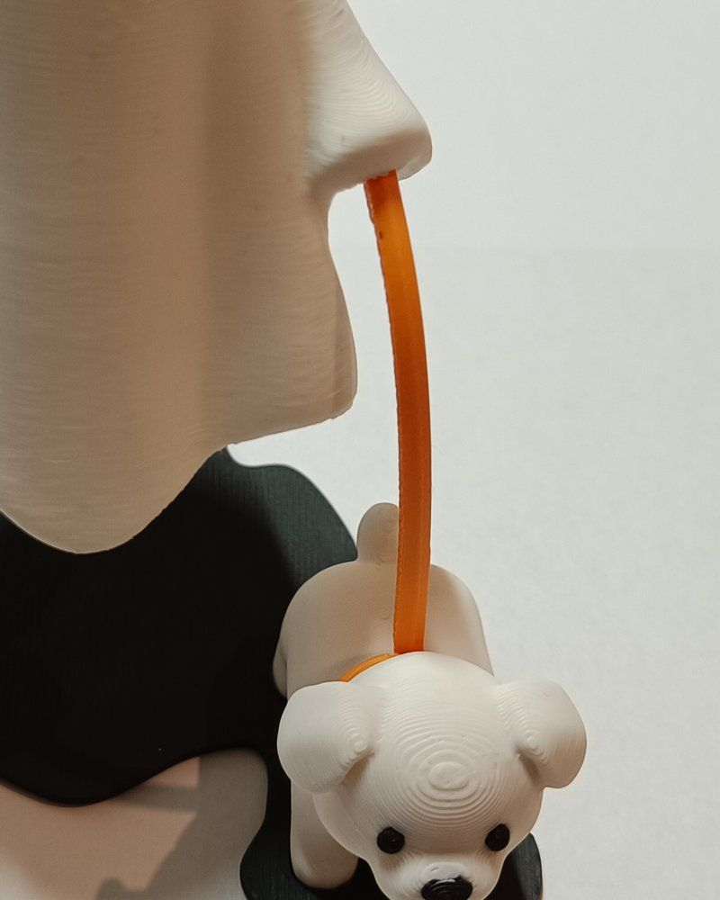
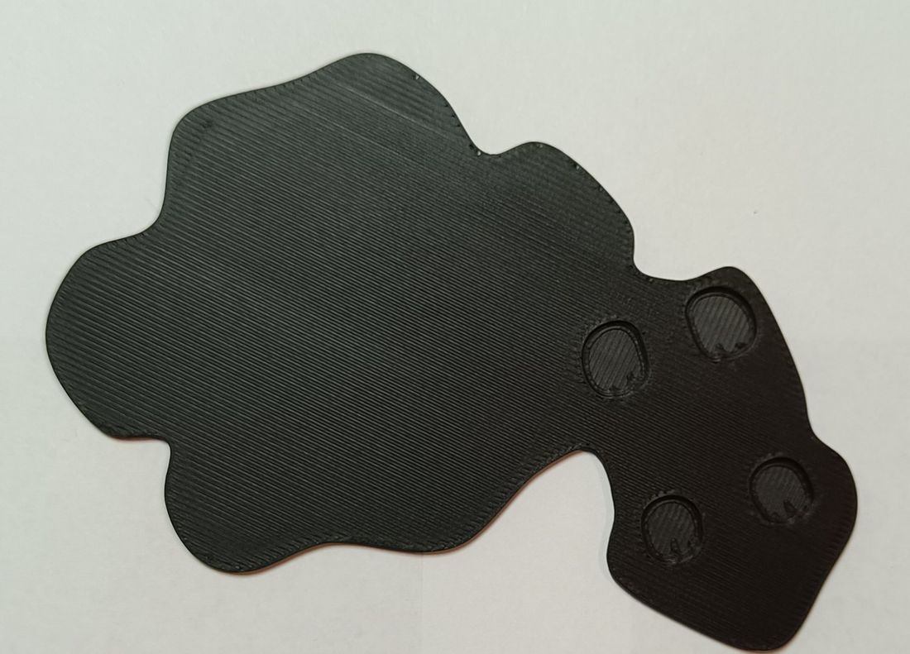
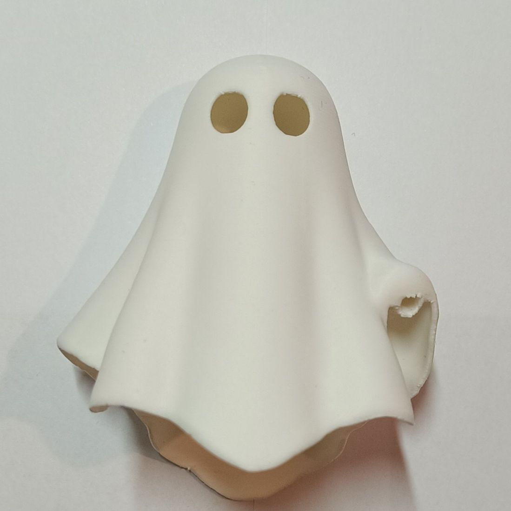

Le Fantôme
et son chien

Ta figurine arrive prête à monter. Il te faut juste un peu de colle forte, le reste s'assemble à la main.
- Bougie LED glissée sous le fantôme, elle fait briller ses yeux
Contenu du kit

A B C DUne pièce manquante ou abîmée ? Envoie-moi un message sur Vinted, je trouve une solution.
Montage
Colle le chien
Mets une goutte de colle dans chacun des 4 creux du socle B, puis emboîte les 4 pattes du chien C. Il regarde vers l'avant.
Laisse bien sécher avant de passer à l'étape 03.

colle + 4 pattes
Fixe la laisse au chien
Glisse une extrémité de la laisse D dans le collier du chien.
La laisse est fine : manipule-la doucement.

→ collier
collierAccroche le fantôme
Une fois la colle sèche, pose le fantôme A sur la grande partie arrondie du socle et glisse l'autre extrémité de la laisse dans le trou de sa main.
C'est fini : ton fantôme promène son chien.

fantôme
laisse iciBon à savoir
C'est terminé.
La figurine te plaît ? Un petit avis sur Vinted aide énormément.